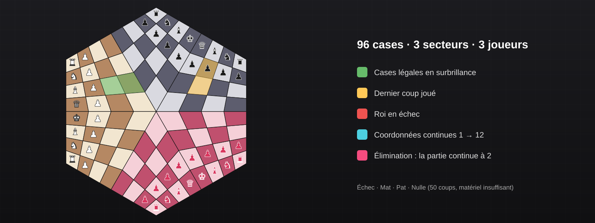
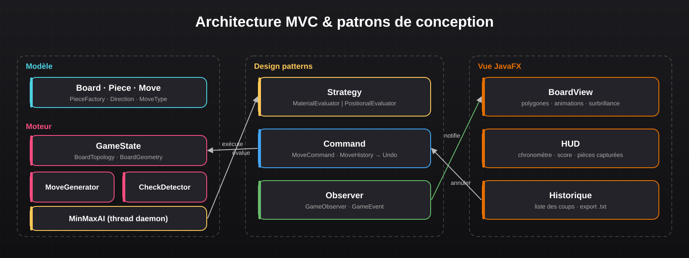

Projet 18 : Yalta Chess
Implémentation complète du Yalta, variante des échecs à 3 joueurs sur plateau hexagonal de 96 cases, en Java 21 et JavaFX, avec une IA alpha-bêta multithreadée.



À propos du projet
Le Yalta est une variante des échecs pour trois joueurs, jouée sur un plateau hexagonal de 96 cases divisé en trois secteurs. Sa géométrie rend les déplacements non triviaux : les lignes et diagonales changent de direction au passage d'un secteur à l'autre, au centre du plateau.
J'ai développé le jeu de zéro : modélisation de la topologie du plateau, génération des coups légaux, détection de l'échec, du mat, du pat et des nulles, gestion de l'élimination d'un joueur (la partie continue entre les survivants) et interface graphique JavaFX complète.
L'adversaire artificiel repose sur une recherche alpha-bêta « paranoïaque » (l'IA suppose que ses deux adversaires jouent contre elle), parallélisée sur un pool de threads avec limite de temps, et dont la fonction d'évaluation est interchangeable grâce au pattern Strategy.
Fonctionnalités développées
- Moteur de règles complet : déplacements par secteur, promotion, échec, mat, pat, règle des 50 coups, matériel insuffisant
- Élimination d'un joueur maté et poursuite de la partie à deux
- IA alpha-bêta paranoïaque multithreadée (pool de threads, limite de 3 s, profondeur 3) exécutée hors du thread JavaFX
- Deux niveaux de difficulté : évaluation matérielle (facile) ou positionnelle (difficile)
- Interface JavaFX : cases légales en vert, dernier coup en jaune, roi en échec en rouge, animation de la pièce sélectionnée
- HUD : badges joueurs, chronomètre, score matériel, pièces capturées
- Historique des coups, annulation (Undo) et export de la partie en
.txt
Compétences développées :
- Conception orientée objet et architecture MVC stricte
- Mise en œuvre de patrons de conception (Strategy, Command, Observer, Factory)
- Algorithmique des jeux : Min-Max, élagage alpha-bêta, ordonnancement des coups
- Programmation concurrente en Java (ExecutorService, Future, thread daemon, Platform.runLater)
- Géométrie et topologie d'un plateau non standard
- Tests unitaires JUnit 5 et build Maven